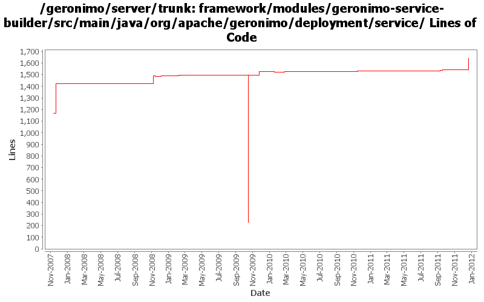

[root]/framework/modules/geronimo-service-builder/src/main/java/org/apache/geronimo/deployment/service

| Author | Changes | Lines of Code | Lines per Change |
|---|---|---|---|
| Totals | 58 (100.0%) | 1907 (100.0%) | 32.8 |
| djencks | 37 (63.8%) | 1536 (80.5%) | 41.5 |
| gdamour | 13 (22.4%) | 324 (17.0%) | 24.9 |
| xuhaihong | 3 (5.2%) | 26 (1.4%) | 8.6 |
| gawor | 2 (3.4%) | 15 (0.8%) | 7.5 |
| violalu | 1 (1.7%) | 4 (0.2%) | 4.0 |
| kevan | 2 (3.4%) | 2 (0.1%) | 1.0 |
GERONIMO-6240 make xml attribute and reference builders work and provide GBeanBuilder as a gbean for modules builders to use
126 lines of code changed in 3 files:
GERONIMO-6240 Make several base geronimo functions (kernel, deployer, etc) DS services and make the car-maven-plugin take advantage of that. Server assembly doesn't work yet, builds framework.
81 lines of code changed in 2 files:
GERONIMO-5704 Farming module provision of utilizing encrypted password instead of plain text (Based on the patch from Xiao Yi)
8 lines of code changed in 1 file:
GERONIMO-6159 Make bundle-classPath setting work
4 lines of code changed in 1 file:
add support for DynamicImport-Package header in configuration environment
7 lines of code changed in 1 file:
GERONIMO-5567 rewrite jetty integration to use a openejb-like info tree and the *Registration interfaces. This gets everything started in the right order and is a lot simpler. Old code still needs to be removed
6 lines of code changed in 8 files:
add support for Require-Bundle header in configuration environment
8 lines of code changed in 1 file:
GERONIMO-5009 Enable Java EE package deployment in Geronimo 3.0
11 lines of code changed in 1 file:
GERONIMO-5008 Create util methods for all the Geronimo components
7 lines of code changed in 1 file:
fix problem in EarConfigBuilder when constructing sub-configurations for wars. Rename DeploymentContext.getBundle to getDependencyBundle to try to make it clearer that it is temporary and not always available. Start updating pluto/console stuff for pluto 2.
1 lines of code changed in 1 file:
GERONIMO-4911 Put osgi manifest info in environment, generate manifest in the deployer not in car-maven-plugin. Reduce use of jee-specs, try to eliminate spring car. Don't try to build plugingroups or assemblies until they actually build
38 lines of code changed in 1 file:
GERONIMO-4916 step 2 move sandbox osgi framework into trunk
1267 lines of code changed in 8 files:
GERONIMO-4916 step 1 remove old framwork
0 lines of code changed in 8 files:
GERONIMO-4531, GERONIMO-4523 Simplify builder collections. Make security principal-role mappings independent of the application
8 lines of code changed in 2 files:
GERONIMO-4403 re-add private-classes element handling.
9 lines of code changed in 2 files:
Revert addition of private-classes element. Private classes can be
configured via scripts.
(GERONIMO-4403) Provide a mechanism to hide specific classes of a configuration to all its children
1 lines of code changed in 2 files:
Add private-classes element which allows specific classes to be hidden from all child configurations. In effect, they are private to the configuration.
(GERONIMO-4403) Provide a mechanism to hide specific classes of a configuration to all its children
70 lines of code changed in 3 files:
*** Definition of annotations streamlining the definition of GBeanInfos.
* @GBean: optional annotation defining the name and j2eeType of a GBean.
If this annotation is not specified, then the default name is assumed to be
the class (simple) name and the default j2eeType is GBean.
* @Priority: optionalannotation defining the priority of a GBean.
* @ParamSpecial: annotation defining a GBean special attribute to be
injected.
* @ParamAttribute: annotation defining the GBean attribute to be injected.
* @ParamReference: annotation defining the GBean reference to be injected.
* @Persistent: annotation for setter methods turning the corresponding GBean
attributes into persistent attributes.
* @Reference: annotation for setter methods turning the corresponding GBean
attribute into a GBean reference.
Note that at most one constructor must be annotated with @ParamSpecial,
@ParamAttribute or @ParamReference.
*** Add a GBeanInfo factory strategy, GBeanInfoFactory, which allows us to
plug-in an annotation based GBeanInfo factory implementation.
*** Use annotation based GBeanInfo declaration for clustering related GBeans.
*** Use xbean-reflect to build GBean instances.
This fixes GERONIMO-3952 - Definition of GBeanInfo via annotations
0 lines of code changed in 2 files:
GERONIMO-1761 move geronimo-util to geronimo-crypto. Still pending mv of one test directory that svn wouldn't let me move
2 lines of code changed in 2 files:
GERONIMO-3742 Split up namespace upgrades into the modules that need them
0 lines of code changed in 2 files:
Add a convenience PropertyEditor, JavaBeanXmlAttributeEditor, which is
intended to be used as a base class for property editors of JavaBeans
defined as gbean xml-attributes. This base property editor is able to
skip the "xml-serialization" of properties whose read methods are annotated
with @DoNotPersist. It is also able to encrypt prior xml-serialization the
properties whose read methods are annotated with @EncryptOnPersist.
It is now possible to declare a propertyEditor on a config.xml gbean attribute.
This property editor is used to retrieve the value of the attribute based
on its mixed-content. Combined with the above convenience PropertyEditor, it
is now easy to override gbean attributes defined by Java xml-attribute in
configuration plans.
Write a BasicExtendedJMXConnectorInfoEditor to allow the override of the
extendedJMXConnectorInfo attribute of BasicNodeInfo. Users can now easily
declare new nodes within the clustering configuration.
Fixes GERONIMO-3610 - Allows the override of XML JavaBean attribute in
config.xml
253 lines of code changed in 4 files:
Add optional class attribute so that it is possible to specify the class name of the JavaBean to be configured instead of relying on the GBeanAttribute type. This allows the declaration of interfaces as GBean attributes and hence improve testability
0 lines of code changed in 2 files: